วงจร RLC และการวิเคราะห์วงจรไฟฟ้า#
บทความนี้กล่าวถึง การวิเคราะห์วงจรพื้นฐานทางไฟฟ้าที่ประกอบด้วยตัวต้านทาน ตัวเก็บประจุ และตัวเหนี่ยวนำไฟฟ้า (เรียกว่า วงจร RLC) โดยใช้ซอฟต์แวร์ประเภททื่เรียกว่า EDA (Electronics Design Automation) ซึ่งในปัจจุบันมีให้เลือกใช้งานอยู่หลายตัวเลือก แต่บทความนี้นำเสนอตัวอย่างการใช้ซอฟต์แวร์ฟรีที่มีชื่อว่า EasyEDA ใช้งานได้ทั้งแบบ Online (Web-based) และ Desktop App (แต่ต้องสมัครสมาชิกเพื่อสร้างบัญชีผู้ใช้ก่อนเข้าใช้งาน) นอกจากนั้นแล้วยังมีตัวอย่างการใช้ซอฟต์แวร์และเขียนโค้ดด้วย MATLAB (แต่มีลิขสิทธิ์ในการใช้งานและค่าใช้จ่าย) หรือใช้ Python ซึ่งเป็น Open Source เพื่อเขียนโค้ดและช่วยวิเคราะห์การทำงานของวงจร RLC
Keywords: RLC Circuits, Circuit Analysis, EasyEDA, MATLAB, Python
▷ ทฤษฎีพื้นฐานในการวิเคราะห์วงจรไฟฟ้าพื้นฐาน#
โดยทั่วไปแล้ว ในวงจรพื้นฐานทางไฟฟ้า (Basic Electrical Circuits) ถ้ามีตัวต้านทาน (Resistors) ตัวเก็บประจุ (Capacitors) และตัวเหนี่ยวนำไฟฟ้า (Inductors) เป็นองค์ประกอบของวงจร และเรียกวงจรประเภทนี้ว่า RLC นอกจากนั้นยังต้องมีแหล่งพลังงานไฟฟ้าในวงจร เช่น แบตเตอรี่ (Batteries) หรือ แหล่งจ่ายที่ให้แรงดันไฟฟ้าคงที่ (Constant Voltage Source) หรือกระแสคงที่ (Constant Current Source) เป็นต้น
เทคนิคสำหรับการวิเคราะห์วงจรที่ประกอบด้วย RLC เกี่ยวข้องกับทฤษฎีหรือกฎทางไฟฟ้าและฟิสิกส์ เช่น
-
กฎของเคอร์ชอฟฟ์ (Kirchhoff's Circuit Laws) ซึ่งมี 2 ข้อ แบ่งเป็นกฎสำหรับแรงดันไฟฟ้า (KVL) และสำหรับกระแสไฟฟ้า (KCL) ตามลำดับ
- KVL: Kirchoff's Voltage Law:
ผลรวมทางพีชคณิตของแรงดันไฟฟ้าภายในวงจรปิดใด ๆ หรือที่เรียกว่า เมช (Mesh) มีค่าเท่ากับศูนย์
- KCL: Kirchoff's Current Law:
ณ จุดใด ๆ ในวงจรไฟฟ้า หรือที่เรียกว่า โหนด (Node) ผลรวมทางพีชคณิตของกระแสไฟฟ้าที่ไหลเข้าและไหลออก มีค่าเท่ากับศูนย์
หรือกล่าวได้ว่า กระแสไฟฟ้าที่ไหลเข้าจุดใดจุดหนึ่งในวงจรไฟฟ้า จะเท่ากับกระแสไฟฟ้าที่ไหลออกจากจุดนั้น
- KVL: Kirchoff's Voltage Law:
-
ความสัมพันธ์แบบเชิงเส้นระหว่างความต่างศักย์ไฟฟ้า หรือแรงดันไฟฟ้าตกคร่อม และกระแสไฟฟ้า ที่ไหลผ่านตัวนำไฟฟ้าที่มีค่าความต้านทาน ซึ่งเป็นไปตามกฎของโอห์ม (Ohm's Law):
-
ความสัมพันธ์ระหว่างแรงดันไฟฟ้าที่ขั้วทั้งสองของตัวเก็บประจุและกระแสที่ไหลเข้าหรือออก:
- ตัวเก็บประจุมีสองขั้วประกอบด้วยตัวนำไฟฟ้าที่ถูกแยกจากกันโดยมีสารไดอิเล็กทริก (Dielectric) คั่นกลาง เช่น เซรามิก (Ceramic) แทนทาลัม (Tantalum) และวัสดุอื่น ๆ เป็นต้น
- เมื่อป้อนแรงดันไฟฟ้าที่ขั้วทั้งสองของตัวเก็บประจุ จะทำให้เกิดสนามไฟฟ้าในตัวเก็บประจุและมีประจุไฟฟ้าสะสมไว้ภายในตัวเก็บประจุ และสามารถเก็บพลังงานไฟฟ้าได้เมื่อตัดการเชื่อมต่อจากวงจร
- เมื่อมีกระแสไฟฟ้าไหล ในทิศทางเข้าหรือออกจากตัวเก็บประจุ จะทำให้แรงดันไฟฟ้าตกคร่อมที่ตัวเก็บประจุ เปลี่ยนแปลงตามเวลา เช่น ถ้ามีกระแสไหลเข้า ก็เป็นการชาร์จประจุไฟฟ้า ทำให้มีประจุไฟฟ้าเพิ่มขึ้น และแรงดันไฟฟ้าของตัวเก็บประจุเพิ่มขึ้น แต่ถ้ามีกระแสไหลออก ก็เป็นการคายประจุไฟฟ้า ทำให้ประจุไฟฟ้าลดลง และแรงดันไฟฟ้าของตัวเก็บประจุก็ลดลง
- ปริมาณประจุไฟฟ้า (Charge) ที่ถูกเก็บอยู่ในตัวเก็บประจุกับแรงดันไฟฟ้าตกคร่อม ณ เวลาใด ๆ มีความสัมพันธ์ดังนี้ โดยที่ เป็นค่าของตัวเก็บประจุ (หน่วยเป็น Farad: F) ดังนั้นถ้าไม่มีประจุไฟฟ้าในตัวเก็บประจุ (มีประจุไฟฟ้าเป็นศูนย์) แรงดันไฟฟ้าจะเป็นศูนย์
- ถ้ามีการเปลี่ยนแปลงประจุไฟฟ้าเกิดขึ้น (เพิ่มขึ้นหรือลดลง) จะต้องมีกระแสไหล และอัตราการเปลี่ยนแปลงประจุในช่วงเวลาหนึ่ง () ก็จะเท่ากับปริมาณกระแส ที่ไหลโดยเฉลี่ยในช่วงเวลานั้น
- ถ้าให้ (เข้าใกล้ศูนย์) ก็สามารถเขียนให้อยู่ในรูปของสมการเชิงอนุพันธ์ได้ดังนี้ โดยที่ และ เป็นปริมาณทางไฟฟ้าที่ขึ้นอยู่กับตัวแปรอิสระ (เวลา) หรือเขียนให้อยู่ในรูปของการอินทิเกรต
-
ความสัมพันธ์ระหว่างแรงดันไฟฟ้าที่ขั้วทั้งสองของตัวเหนี่ยวนำไฟฟ้าและกระแสที่ไหล:
- เมื่อมีกระแสไฟฟ้าไหลผ่านขดลวดที่เป็นตัวนำไฟฟ้า หรือที่เรียกว่า "คอยล์" (Coil) จะทำให้เกิดสนามแม่เหล็ก (Magnetic Field) บริเวณรอบ ๆ ตัวนำไฟฟ้า ตัวอย่างอุปกรณ์ที่ใช้หลักการนี้ในการทำงาน ได้แก่ โซลีนอยด์ (Solenoid) และ ขดลวดในรีเลย์ เป็นต้น
- ในสนามแม่เหล็กที่เกิดขึ้นรอบตัวนำไฟฟ้าที่มีกระแสไฟฟ้าไหล (หน่วยเป็นแอมแปร์) จะมีเส้นแรงแม่เหล็ก หรือเรียกว่า ฟลักซ์แม่เหล็ก (Magnetic Flux) มีหน่วยเป็น "เวเบอร์" (Weber: Wb) และปริมาณฟลักซ์แม่เหล็กก็ขึ้นอยู่กับปริมาณกระแสไฟฟ้าที่ไหล
- สนามแม่เหล็ก มีหน่วยเป็น "เทสลา" (Testa: T) ซึ่งเป็นความหนาแน่นของฟลักซ์แม่เหล็ก (Magnetic Flux Density) หรือ ปริมาณเส้นแรงแม่เหล็กต่อหน่วยพื้นที่ตั้งฉากกับเส้นแรงแม่เหล็ก
- เมื่อมีกระแสไฟฟ้าไหล ผ่านคอยล์ที่มีลักษณะเป็นทรงกระบอกและมีแกนอากาศ (Air-Core Cylindrical Coil) มีความยาว ซึ่งเป็นรัศมีของคอยล์ และมีจำนวนรอบ (Turns) ของการพันขดลวด (Winding) เท่ากับ สนามแม่เหล็ก ที่เกิดขึ้นภายใน ณ จุดใดจุดหนึ่งในแกนกลางของคอยล์ สามารถคำนวณหาค่าประมาณได้ โดยใช้สูตรต่อไปนี้: โดยที่ ใช้สัญลักษณ์ สำหรับพื้นที่หน้าตัดของคอยล์ และ คือ จำนวนรอบของขดลวดต่อหน่วยความยาวของคอยล์ (Winding Density)
- เมื่อมีกระแสไหลผ่านคอยล์จะเกิดฟลักซ์แม่เหล็ก ซึ่งจะได้มากหรือน้อย ก็ขึ้นอยู่กับค่าเหนี่ยวนำตัวเอง (Self-Inductance) ของคอยล์
- ความสัมพันธ์ระหว่างปริมาณกระแสไฟฟ้า ที่ไหลผ่านคอยล์ที่มีจำนวนรอบในการพันขดลวดเท่ากับ และปริมาณเส้นแรงแม่เหล็กที่เชื่อมโยงขดลวดทั้งหมด (Magnetic Flux Linkage) ซึ่งเท่ากับ มีดังนี้
- สัญลักษณ์ L คือ ค่าการเหนี่ยวนำ (Inductance) มีหน่วยเป็น "เฮนรี" (Henry: H) และในกรณีของคอยล์แกนอากาศทรงกระบอก ก็สามารถคำนวณค่า (โดยประมาณ) สำหรับค่าเหนี่ยวนำตัวเอง ได้ดังนี้
- หากใช้ขดลวดรูปทรงอื่น เช่น คอยล์รูปทรงทอรอยด์ (Toroidal Coil) จะมีวิธีการคำนวณค่า แตกต่างกันไปจากคอยล์ทรงกระบอก และขึ้นอยู่กับวัสดุแกนกลางที่ไม่ใช่อากาศด้วย เช่น แกนเฟอร์ไรท์ (Ferrite Core)
- หากกระแสไฟฟ้าที่ไหลผ่านขดลวดมีการเปลี่ยนแปลง จะทำให้ฟลักซ์แม่เหล็กเปลี่ยนแปลงตามในเชิงเวลา
- หากมีการเปลี่ยนแปลงของฟลักซ์ภายในแกนกลางของคอยล์ที่มีจำนวนรอบของขดลวด จะทำให้เกิดแรงดันไฟฟ้าเหนี่ยวนำในขดลวดนั้น (Self-Induced Voltage) หรือ มีแรงเคลื่อนไฟฟ้า (Electromotive Force : EMF) ตามกฎการเหนี่ยวนำแม่เหล็กไฟฟ้าของฟาราเดย์ (Faraday's Law of Induction)
- แรงดันไฟฟ้าเหนี่ยวนำเกิดขึ้นเพื่อต้านการเปลี่ยนแปลงของกระแสหรือฟลักซ์แม่เหล็ก (ดังนั้นจึงมีเครื่องหมายเป็นลบ) ตามกฎของเลนซ์ (Lenz's Law) ยกตัวอย่างเช่น หากมีกระแสไหลผ่านขดลวดมากขึ้น จะเกิดแรงดันไฟฟ้าเหนี่ยวนำเพื่อให้ต้านการเพิ่มขึ้นของกระแสดังกล่าว
- ถ้าให้ ก็สามารถเขียนให้อยู่ในรูปของสมการเชิงอนุพันธ์ได้ดังนี้ โดยที่ และ เป็นปริมาณทางไฟฟ้าสำหรับตัวเหนี่ยวนำที่ขึ้นอยู่กับตัวแปรอิสระ (เวลา) หรือเขียนให้อยู่ในรูปของการอินทิเกรต
เอกสารอ้างอิง: หนังสือฟิสิกส์ระดับมหาวิทยาลัยที่สามารถเปิดอ่านหรือดาวน์โหลดได้ฟรี โดย OpenStax / Rice University เช่น เนื้อหาเกี่ยวกับแม่เหล็กและตัวเหนี่ยวนำจะอยู่ในบทที่ 11-14 ของหนังสือ "University Physics Volume 2"
เมื่อได้ทำความเข้าใจหรือทบทวนทฤษฎีพื้นฐานเหล่านี้แล้ว ถัดไปเป็นตัวอย่างการวิเคราะห์วงจรไฟฟ้าพื้นฐาน
▷ การวาดวงจรและจำลองการทำงานด้วย EasyEDA#
ผู้ใช้สามารถจำลองการทำงานของวงจรได้ (ใช้โปรแกรม LTspice ที่ทำงานร่วมกับซอฟต์แวร์ EasyEDA) ซึ่งมีรูปแบบหรือโหมดในการวิเคราะห์วงจร ให้เลือกหลายแบบดังนี้ (อ้างอิงจาก EasyEDA - Setting up Analyses)
- DC op pnt (
.op): Find the Quiescent DC Operating Point - DC Transfer (
.tf): Find the DC Small-Signal Transfer Function - DC Sweep (
.dc): Perform a DC-Sweep Analysis - AC Analysis (
.ac): Perform a Small-Signal AC (Frequency-Domain) Analysis - Transient (
.tran): Perform a Transient (Time-domain) Analysis
ยกตัวอย่างเช่น ถ้าต้องการดูว่า การเปลี่ยนระดับแรงดันไฟฟ้าในช่วงที่กำหนดไว้ของแหล่งจ่ายกระแสตรง จะส่งผลอย่างไรต่อวงจร เช่น ดูความสัมพันธ์ระหว่างแรงดันและกระแส (V-I Curve) ของไดโอด หรือ ทรานซิสเตอร์ ก็ให้ใช้โหมด DC Sweep
ถ้าต้องการดูว่า อินพุตของวงจร เช่น แหล่งจ่ายแรงดัน ที่มีการเปลี่ยนแปลงขนาดในช่วงแคบ ๆ (Small-Signal) จะส่งผลต่อการเปลี่ยนแปลงของเอาต์พุตของวงจรอย่างไร แล้วนำไปคำนวณหาอัตราส่วนระหว่างขนาดของเอาต์พุตเทียบกับอินพุต หรืออัตราการขยายของวงจร (DC Gain) ในกรณีนี้ให้เลือกโหมด DC Small-Signal Transfer Function
หากต้องการดูผลตอบสนองในเชิงเวลาของวงจร ก็ให้เลือกใช้โหมด Transient หรือ ถ้าต้องการดูผลตอบสนองเชิงความถี่ของวงจรที่เกิดจากแหล่งจ่าย AC ในย่านความถี่ตามได้ที่กำหนดไว้ เช่น ดูค่าแอมพลิจูดและเฟสของสัญญาณ ก็จะใช้โหมดการวิเคราะห์ที่เรียกว่า AC Analysis และถ้าเลือกโหมด DC Operating Point คือ การวิเคราะห์วงจร ณ เวลาเท่ากับ 0 (t=0) เป็นต้น
การวาดผังวงจร (Schematic Capture) โดยใช้ EasyEDA เริ่มต้นโดยการสร้างโปรเจกต์ใหม่ ให้เปลี่ยนจากโหมด Standard (STD) เป็นโหมด Simulation (SIM) ก่อนเริ่มวาดวงจร สำหรับวิธีการใช้งาน แนะนำให้ศึกษาเอกสารออนไลน์ EasyEDA Simulation Tutorial
▷ การวิเคราะห์วงจรกระแสตรง และการจำลองการทำงานด้วย EasyEDA#
ตัวอย่างแรกเป็นวงจรไฟฟ้ากระแสตรงที่ประกอบด้วยตัวต้านทาน (R1 R2 R3) และแหล่งจ่ายแรงดันคงที่ (V1 V2) ตามรูปผังวงจรต่อไปนี้
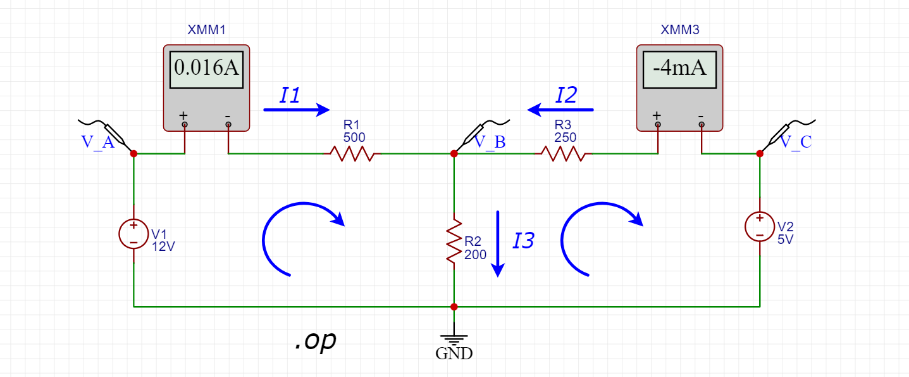
รูป: ตัวอย่างวงจรกระแสตรงและการจำลองการทำงานในโหมด DC Operating Point (.op)
จากผังวงจร ก็สามารถใช้หลักการวิเคราะห์แบบ Mesh Analysis (Loop Analysis) เพื่อหาปริมาณและทิศทางกระแสที่ไหลในวงจรไฟฟ้ากระแสตรง โดยการแปลงวงจร ให้อยู่ในรูปของระบบสมการเชิงเส้นและหาผลเฉลยสำหรับตัวแปรที่เป็นกระแสไฟฟ้า
จัดรูปของสมการใหม่ และเขียนให้อยู่ในรูปแบบของเมทริกซ์ และเวกเตอร์ ได้ดังนี้
ถ้าสามารถแก้ระบบสมการเชิงเส้นที่มีสองตัวแปรนี้ได้ ก็จะทราบกระแสไฟฟ้า และ ที่ไหลในวงจร
แต่ถ้าจะใช้วิธีแบบ Nodal Analysis เพื่อหาค่าของแรงดันไฟฟ้าที่จุดหรือโหนด เช่น , , เทียบกับ GND ของวงจร ก็มีตัวอย่างดังนี้
จากการจำลองการทำงานของวงจรไฟฟ้าด้วย EasyEDA จะได้กระแสไฟฟ้า และ ตามทิศทางของกระแสที่ได้กำหนดไว้ในวงจร และจะได้แรงดันไฟฟ้า , และ ซึ่งใช้โพรบวัดแรงดัน (Voltage Probe) หรือจุดวัดแรงดันไฟฟ้าในวงจรเทียบกับ GND
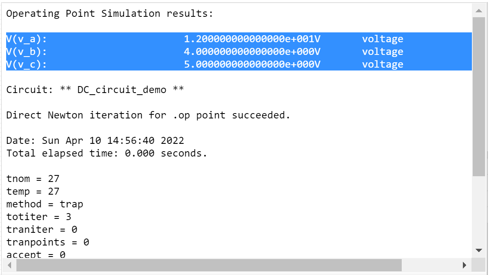
รูป: ผลการจำลองการทำงาน (SPICE Simulation Results) แสดงค่า , ,
ถ้าจะลองเขียนโค้ด MATLAB (ทดลองใช้กับเวอร์ชัน R2022a) เพื่อแก้ระบบสมการที่ได้จากการวิเคราะห์แบบ Mesh Analysis (ใช้การประมวลผลเชิงสัญลักษณ์ หรือ Symbolic Processing) ก็มีแนวทางดังนี้ ซึ่งจะได้ I1=0.016 A และ I2=0.004 A (หรือ 4 mA) ตามลำดับ
การเขียนโค้ดแบบทื่ 1: สร้างสมการแล้วแปลงให้เป็นเมทริกซ์และเวกเตอร์ (Mesh Analysis)
% clear all symbols, variables, figures and command outputs
clearvars; clc; clf;
% create symbols
syms R1 R2 R3 positive;
syms V1 V2 I1 I2;
% write equations resulting from KVL analysis
eqn1 = -V1 + I1*R1 + (I1+I2)*R2 == 0;
eqn2 = -(I1+I2)*R2 - I2*R3 + V2 == 0;
eqns = [eqn1, eqn2];
vars = [I1, I2];
% convert the equations into matrix form
[A,b] = equationsToMatrix( eqns, vars )
% solve the linear equation system
sol = A\b;
% substitute circuit parameters with specific values
params = [R1, R2, R3, V1, V2];
values = [500, 200, 250, 12, 5];
I1 = sol(1); I2 = sol(2);
I1 = subs( I1, params, values );
I2 = subs( I2, params, values );
% show the numeric values of current flows I1 and I2
fprintf( "I1=%.3f A, I2=%.3f A", I1, I2 )
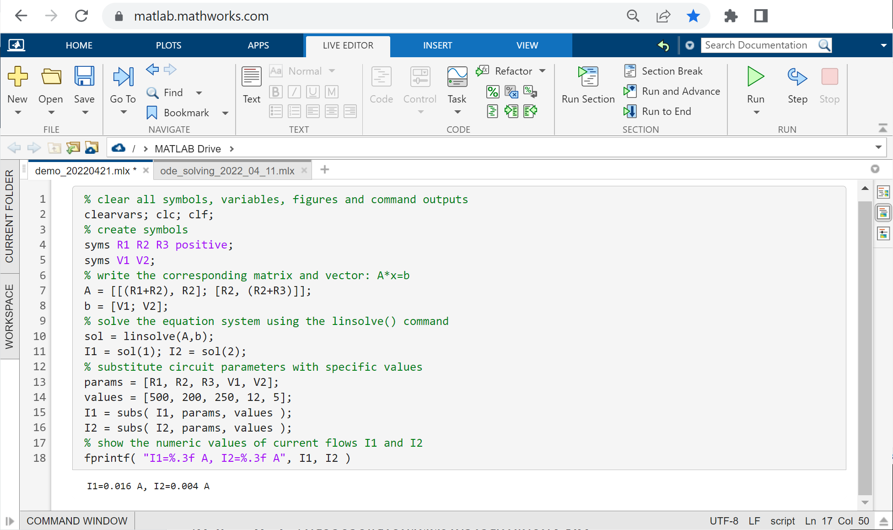
รูป: ตัวอย่างการใช้งาน MATLAB Online - LiveScript สำหรับตัวอย่างโค้ดที่ 1
การเขียนโค้ดแบบทื่ 2: เขียนให้อยู่ในรูปเมทริกซ์และเวกเตอร์ (Mesh Analysis)
% clear all symbols, variables, figures and command outputs
clearvars; clc; clf;
% create symbols
syms R1 R2 R3 positive;
syms V1 V2;
% write the corresponding matrix and vector: A*x=b
A = [[(R1+R2), R2]; [R2, (R2+R3)]];
b = [V1; V2];
% solve the equation system using the linsolve() command
sol = linsolve(A,b);
I1 = sol(1); I2 = sol(2);
% substitute circuit parameters with specific values
params = [R1, R2, R3, V1, V2];
values = [500, 200, 250, 12, 5];
I1 = subs( I1, params, values );
I2 = subs( I2, params, values );
% show the numeric values of current flows I1 and I2
fprintf( "I1=%.3f A, I2=%.3f A", I1, I2 )
การเขียนโค้ดแบบทื่ 3: สร้างสมการแล้วแปลงให้เป็นเมทริกซ์และเวกเตอร์ (Nodal Analysis)
ในตัวอย่างนี้ มีการใช้คำสั่ง equationsToMatrix() เพื่อแปลงรายการของสมการหรือระบบสมการเชิงเส้น
ให้อยู่ในรูปของเมทริกซ์และเวกเตอร์ จากนั้นจึงแก้ระบบสมการเชิงเส้นโดยใช้คำสั่ง linsolve()
% clear all symbols, variables, figures and command outputs
clearvars; clc; clf;
% create symbols
syms R1 R2 R3 positive;
syms VA VB VC V1 V2;
% write equations resulting from KCL analysis
eqn1 = (VA - VB)/R1 + (VC - VB)/R3 == VB/R2;
eqn2 = VA == V1;
eqn3 = VC == V2;
eqns = [eqn1, eqn2, eqn3];
vars = [VA,VB,VC];
% convert the equations into matrix form
[A,b] = equationsToMatrix( eqns, vars )
% solve the linear equation system
sol = linsolve(A,b);
cells = num2cell(sol);
[VA, VB, VC] = cells{:};
% substitute circuit parameters with specific values
params = [R1, R2, R3, V1, V2];
values = [500, 200, 250, 12, 5];
V = subs( [VA,VB,VC], params, values );
fprintf( "V_A=%.3f V, V_B=%.3f V, V_C=%.3f", V(1),V(2),V(3) )
▷ วงจร RC และการจำลองการทำงาน#
ลองมาวิเคราะห์การทำงานของตัวอย่างวงจรประเภท RC ด้วยซอฟต์แวร์ ซึ่งจะเห็นได้ว่า วงจรตัวอย่างนี้มีเพียงตัวต้านทาน R และ C อย่างละหนึ่งตัวเท่านั้น ต่ออนุกรมกันอยู่ และมีแหล่งจ่ายแรงดันไฟฟ้า VS ที่สามารถเลือกรูปแบบของสัญญาณให้เป็นแบบ DC หรือ AC ได้
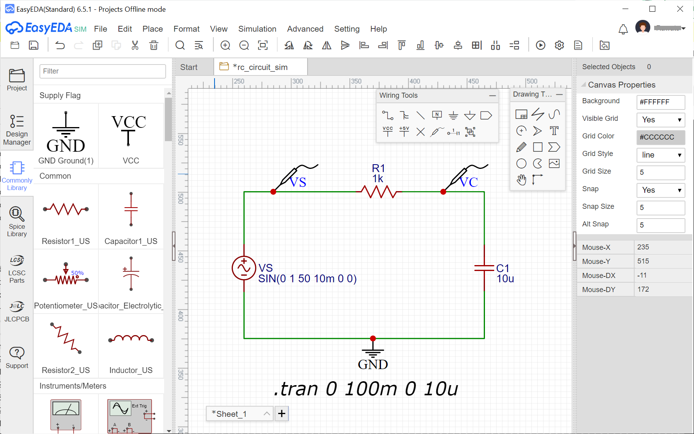
รูป: ตัวอย่างการวาดผังวงจรด้วย EasyEDA
ในแถบด้านซ้ายมือที่มีชื่อว่า Commomly Library มีชิ้นส่วนของวงจรไฟฟ้าให้เลือกนำมาวางในบริเวณ Schematic Editor แล้วต่อกันให้ครบวงจร และจะต้องมีสัญลักษณ์ทางไฟฟ้าสำหรับ GND อยู่ในวงจรด้วย
หากต้องการดูการเปลี่ยนแปลงของปริมาณทางไฟฟ้าของวงจรในเชิงเวลา หรือ ผลตอบสนองชั่วครู่ เช่น แรงดันไฟฟ้าจากแหล่งจ่าย
และแรงดันตกคร่อมที่ตัวเก็บประจุ เป็นต้น โดยมีจุดอ้างอิงเป็น GND ของวงจร
ก็สามารถเลือกใช้โหมด Transient (.tran) และกดปุ่ม F8 (Run your simulation)
เพื่อเริ่มต้นขั้นตอนการจำลองการทำงาน
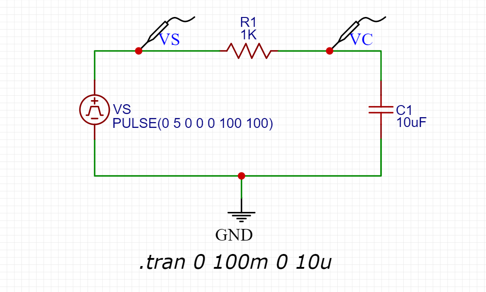
รูป: วงจร RC และการวัดแรงดันตกคร่อมที่ตัวเก็บประจุเมื่ออ้างอิงกับ GND ของวงจรด้วย Voltage Probe
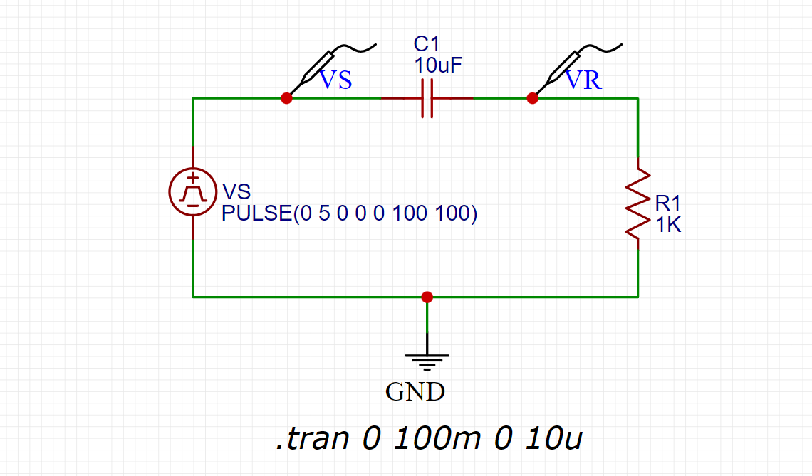
รูป: วงจร RC และการวัดแรงดันตกคร่อมที่ตัวต้านทานด้วย Voltage Probe
ข้อจำกัด: การจำลองการทำงานในโหมด Transient เป็นการคำนวณตามจุดเวลาที่เรียกว่า Time Step และสามารถกำหนดระยะห่างเชิงเวลา เวลาเริ่มต้น และเวลาจบการจำลองการทำงานได้ แต่รวมแล้วจะต้องไม่เกิน 10,000: (stop time - start time)/timestep 10000
ผลการจำลองการทำงานโดย Simulator ใน Waveform Tab ผู้ใช้สามารถนำข้อมูลออกโดยบันทึกเป็นไฟล์ .CSV ได้ โดยทำคำสั่งจากเมนู Waveform > Export Waveform
▷ การจำลองการทำงานของวงจร RC: แหล่งจ่ายเป็นแบบขั้นบันไดและพัลส์#
ถ้าจะสร้างสัญญาณแรงดันไฟฟ้าให้เป็นแบบขั้นบันได (Step Function)
มีการเปลี่ยนแปลงระดับแรงดันไฟฟ้าแบบทันทีในเชิงเวลา
เช่น ณ เวลา ให้มีแรงดันไฟฟ้าเปลี่ยนจาก เป็น ก็เลือกใช้แหล่งจ่ายแรงดันไฟฟ้าในโหมด PULSE
และตั้งค่าช่วงที่แรงดันไฟฟ้าเป็นบวกและคาบของสัญญาณให้เท่ากัน และให้มีระยะเวลามากพอ (ดูที่การตั้งค่าสำหรับพารามิเตอร์
Ton [s] และ Tperiod [s] สำหรับ Voltage Source Settings)
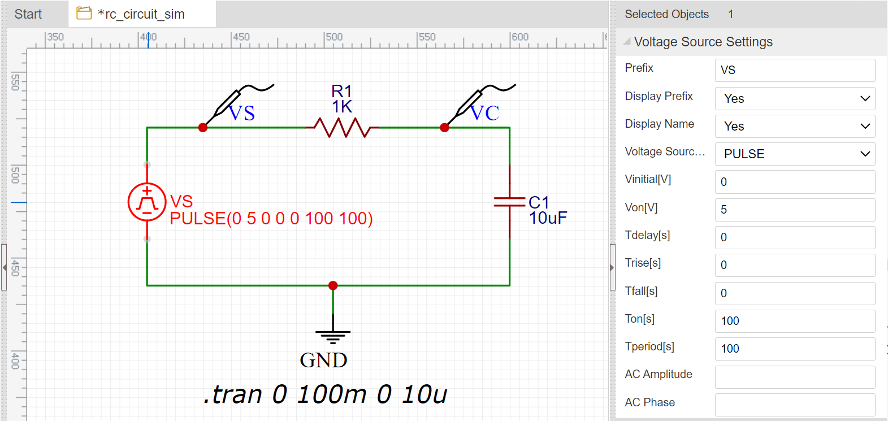
รูป: ตัวอย่างการตั้งค่าสำหรับ แบบ PULSE ให้เป็น 5V ตั้งแต่เวลา เป็นต้นไป
ลองมาดูผลการจำลองการทำงานและแสดงรูปคลื่นสัญญาณ (Waveform) สำหรับแรงดันไฟฟ้า ซึ่งเป็นผลตอบสนองของวงจรจากการเปลี่ยนแปลงของแหล่งจ่าย (เพิ่มระดับแบบขั้นบันได ณ เวลา t=0)
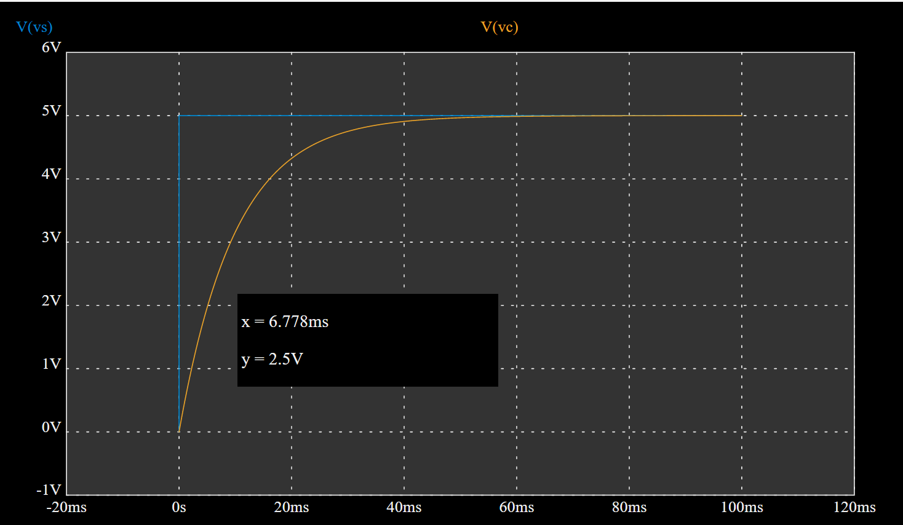
รูป: ผลตอบสนองของวงจรที่มีต่อการเปลี่ยนแปลงระดับแรงดันไฟฟ้าของแหล่งจ่าย
ถ้าต้องการเลือกใช้สัญญาณแบบ PWM (Pulse Width Modulation) แล้วดูผลตอบสนองของวงจร ก็มีตัวอย่างดังนี้ และค่า Duty Cycle ของสัญญาณ PWM มีนิยามดังนี้
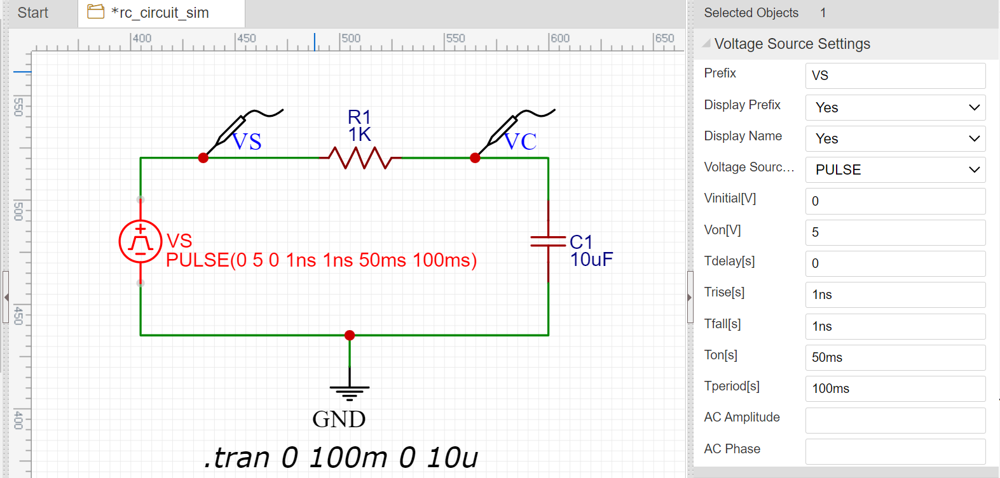
รูป: ตัวอย่างการตั้งค่าสำหรับ แบบพัลส์ (Pulse) หรือ PWM ให้เป็นสัญญาณแบบมีคาบกว้าง 100ms (หรือ ความถี่ 10Hz) และช่วงเวลาที่ ON ให้เป็น 50ms (หรือ Duty Cycle เท่ากับ 50%)
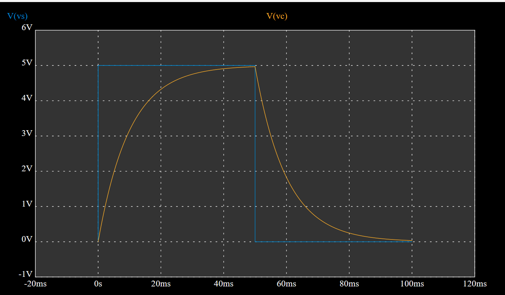
รูป: ผลตอบสนองของวงจรที่มีต่อสัญญาณแบบพัลส์จากแหล่งจ่าย
การวัดแรงดันตกคร่อม (Voltage Drop) ระหว่างสองจุดในวงจรไฟฟ้า อาจใช้สิ่งที่เรียกว่า Differential Probe โดยค้นหาอุปกรณ์โดยใช้คำว่า Diff_V_Probe จากไลบรารี SPICE
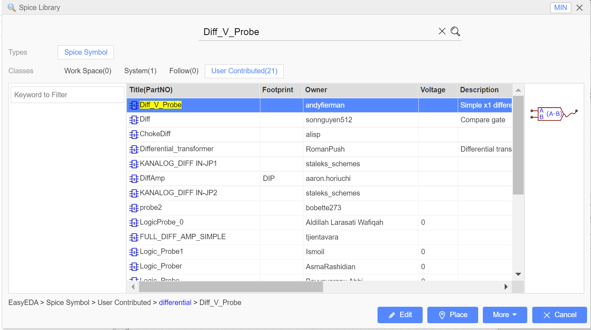
รูป: การค้นหา Diff_V_Probe ใน SPICE Library
ถัดไปให้ลองนำ Diff_V_Probe มาใช้ในวงจร เช่น วัดแรงดันตกคร่อมที่ตัวเก็บประจุ แล้วแสดงรูปคลื่นสัญญาณจากผลการจำลองการทำงาน
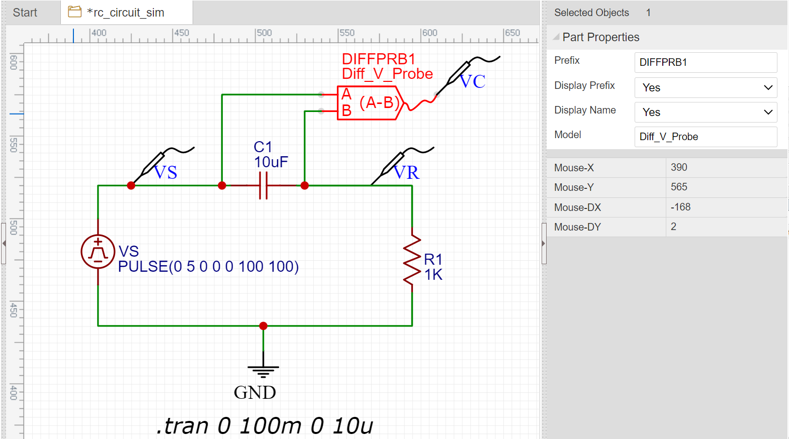
รูป: การใช้ Diff_V_Probe เพื่อวัดแรงดันตกคร่อมที่ตัวเก็บประจุ
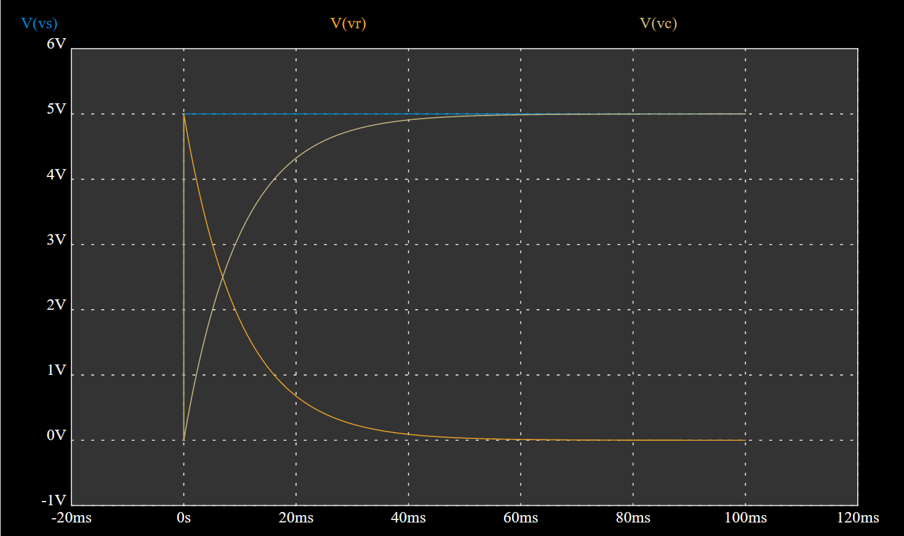
รูป: ผลการจำลองการทำงานที่แสดงรูปคลื่นสัญญาณสำหรับ , และ
ในกรณีที่มีการต่อวงจรเพื่อทดลองจริง ผู้ใช้สามารถใช้แหล่งจ่ายที่เป็นเครื่องกำเนิดสัญญาณได้ (Function Generator) เช่น สร้างสัญญาณรูปคลื่นไซน์ รูปคลื่นสามเหลี่ยม และรูปคลื่นสี่เหลี่ยม และใช้เครื่องออสซิลโลสโคป (Oscilloscope) สำหรับการวัดสัญญาณแบบสองช่องได้ ตัวอย่างการวาดผังวงจรมีดังนี้
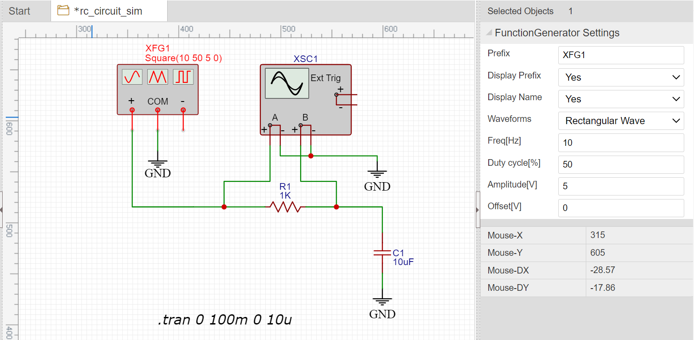
รูป: การใช้เครื่องกำเนิดสัญญาณแบบคลื่นสี่เหลี่ยม และะเครื่องออสซิลโลสโคปเพื่อการวัดสัญญาณ และ เทียบกับ GND สำหรับช่องสัญญาณ A และ B ตามลำดับ
▷ การจำลองการทำงานของวงจร RC: แหล่งจ่ายเป็นรูปคลื่นไซน์#
ในการจำลองการทำงานด้วย EasyEDA หากต้องการให้แหล่งจ่าย เป็นรูปคลื่นสัญญาณไฟฟ้าแบบ AC
(รูปคลื่นไซน์) ให้เลือกโหมด SINE เช่น ตั้งค่าความถี่ 50Hz และมีแอมพลิจูด 5V
และดูผลการจำลองการทำงานในโหมด Transient (.tran) ก็มีตัวอย่างดังนี้
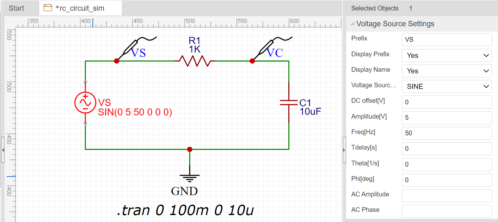
รูป: ตัวอย่างการตั้งค่าสำหรับ ให้เป็นสัญญาณแบบไซน์ (Sine)
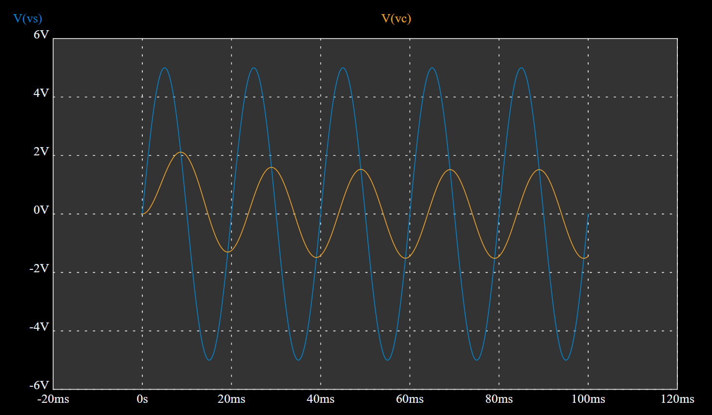
รูป: ผลตอบสนองของวงจรที่มีต่อสัญญาณแบบไซน์จากแหล่งจ่าย
▷ การวิเคราะห์วงจร RC: แหล่งจ่ายเป็นรูปคลื่นไซน์#
จากวงจร RC ที่มีตัวต้านทานต่ออนุกรมกับตัวเก็บประจุ สามารถนำเขียนเขียนสมการโดยใช้หลักการ KVL ได้ดังนี้ โดยที่ และ คือ แรงดันตกคร่อมที่ตัว และตัวเก็บประจุ ตามลำดับ และมี เป็นฟังก์ชันที่มีตัวแปรอิสระเป็นเวลา และกำหนดรูปแบบของแหล่งจ่ายแรงดันไฟฟ้าในวงจร
กระแสไฟฟ้า เป็นกระแสที่ไหลผ่าน และ ในวงจรตัวอย่าง เป็นกระแสเดียวกัน ดังนั้นจึงเขียนความสัมพันธ์ได้ดังนี้
จากคุณสมบัติและความสัมพันธ์ระหว่างแรงดันไฟฟ้าและกระแสไฟฟ้าสำหรับ กับ
ก็สามารถเขียนสมการเชิงอนุพันธ์สามัญอันดับหนึ่ง (First-Order ODE) ได้ดังนี้
หากเลือกแหล่งจ่าย เป็นแรงดันไฟฟ้ากระแสสลับ หรือ AC สำหรับใช้เป็นสัญญาณอินพุตของระบบหรือสัญญาณกระตุ้น ก็ให้ใช้รูปสัญญาณไซน์ที่มีแอมพลิจูด และมีความถี่เชิงมุม ซึ่งเป็นค่าคงที่
สมการเชิงอนุพันธ์ซึ่งเป็นเชิงเส้นและมีสัมประสิทธิ์เป็นค่าคงตัวในกรณีนี้คือ ในตัวอย่างนี้การหาผลเฉลยของ ODE ก็คือ การหาฟังก์ชัน สำหรับช่วงเวลา เป็นต้นไป ที่ทำให้สมการเชิงอนุพันธ์นี้เป็นจริง ถ้าทราบรูปแบบของฟังก์ชันสำหรับ แล้ว ก็สามารถหา ในวงจร RC โดยคำนวณจาก
ผลเฉลยของสมการเชิงอนุพันธ์ในลักษณะนี้ หรืออาจเรียกว่า "ผลตอบสนองโดยสมบรูณ์" (Complete Response) ก็ได้จากผลรวมของผลตอบสนองทางธรรมชาติและผลตอบสนองบังคับ:
การหาผลตอบสนองทางธรรมชาติ#
หากกำหนดให้ ก็จะได้สมการที่เป็นเอกพันธ์ (Homogeneous ODE) และหาสมการลักษณะเฉพาะ (Characteristic Equation) และรากของสมการที่เกี่ยวข้องได้ดังนี้ ผลเฉลยของสมการเอกพันธ์จะเรียกว่า "ผลตอบสนองทางธรรมชาติ" (Natural Response) ของวงจร RC โดยที่ (เรียกว่า Time Constant) และมีสัญลักษณ์ เป็นค่าคงที่ และก็ขึ้นอยู่กับค่าเริ่มต้น ที่เวลา (Initial Condition)
หาก ก็หมายความว่า มีพลังงานหรือประจุไฟฟ้าเก็บอยู่ในตัวเก็บประจุ ถ้าให้ ดังนั้นจะได้ ดังนี้
การหาผลตอบสนองบังคับ#
แต่ถ้าสมมุติว่า ไม่มีพลังงานเก็บไว้ในตัวเก็บประจุ (กรณีนี้เรียกว่า Zero Initial Condition) และให้ ผลเฉลยของสมการเชิงอนุพันธ์ที่ไม่เป็นเอกพันธ์ (Non-homogeneous) จะเรียกว่า "ผลเฉลยเจาะจง" (Particular Solution) หรือ "ผลตอบสนองบังคับ" (Forced Reponse)
สำหรับฟังก์ชันรูปคลื่นไซน์ จะมีรูปแบบของฟังก์ชันที่เป็นผลเฉลยดังนี้
โดยที่ และ เป็นค่าคงที่ และอนุพันธ์อันดับหนึ่งของฟังก์ชัน เป็นดังนี้
ดังนั้นถ้าให้ แล้วนำไปแทนลงสมการ ODE ก็จะเขียนได้ใหม่ดังนี้
จัดกลุ่มใหม่จะได้
ดังนั้นจึงสามารถเขียนเงื่อนไขที่จะทำให้สมการเป็นจริงได้ดังนี้
และ จะได้จากการแก้ระบบสมการเชิงเส้นสองตัวแปรตามเงื่อนไขข้างต้น
ดังนั้นจะได้ฟังก์ชัน ที่เป็นผลเฉลยดังนี้
โดยสรุป ผลตอบสนองโดยสมบรูณ์สำหรับ
และถ้ากำหนดให้ ดังนั้นค่าคงที่ ในสมการ จะเป็นดังนี้
▷ การวิเคราะห์วงจร RC: แรงดันแบบขั้นบันได#
จากสมการเชิงอนุพันธ์สำหรับวงจร RC
ถ้าให้ เป็นแหล่งจ่ายกระแสตรง โดยมีการเปลี่ยนแปลงแบบขั้นบันได (Step Function) ที่เกิดขึ้น ณ เวลา ดังนี้
ผลตอบสนองสมบรูณ์ สำหรับวงจร RC จะเป็นดังนี้
▷ การวิเคราะห์วงจร RC ด้วย MATLAB#
ลองมาดูตัวอย่างโค้ด MATLAB สำหรับการวิเคราะห์วงจร RC หากสามารถกำหนดรูปแบบของสมการเชิงอนุพันธ์สำหรับวงจร RC ได้แล้ว ก็สามารถหาผลเฉลยโดยใช้เทคนิคการคำนวณเชิงสัญลักษณ์ทางคณิตศาสตร์ (Symbolic Math Processing)
กรณีที่ใช้แหล่งจ่ายแรงดันไฟฟ้ารูปคลื่นไซน์#
% clear all symbols, variables, figures and command outputs
clearvars; clc; clf;
% define symbols to be used for formulating the ODE
syms t R C V0 V_S omega tau v_C(t) v_S(t)
% voltage source (sinusoidal)
v_S(t) = V_S * sin(omega * t)
% ODE (first-order)
ode = diff(v_C(t),t) + (1/(R*C))*v_C(t) == v_S(t)/(R*C)
% intial condition
ic = v_C(0)==V0
% solve the ODE to determine v_C(t)
sol = dsolve( ode, ic );
% substitute RC with tau
sol = subs( sol, R*C, tau )
% check whether v_C(0) is equal to V0 (should be true)
isAlways(subs( sol, t, 0 )==V0)
% resistor value (Ohm)
R_value = 1000;
% capacitor value (Farad)
C_value = 10*10^-6;
% frequency (Hz) of the sinusoidal voltage source
freq = 50;
% amplitude (Volt) of the sinusoidal voltage source
VS = 5.0;
% list of parameters
params = [V_S, omega, tau, V0];
% specific values for the parameters
values = [VS, 2*pi*freq, R_value*C_value, 0];
% substitute circuit parameters with the specific values
v_C(t) = subs( sol, params, values )
v_S(t) = subs( v_S(t), params, values )
% set time interval = 0..100 msec
tspan = [0, 0.1];
% plot both v_S(t) and v_C(t) functions
fplot( [v_S(t),v_C(t)], tspan ),
grid on, xlabel('t')
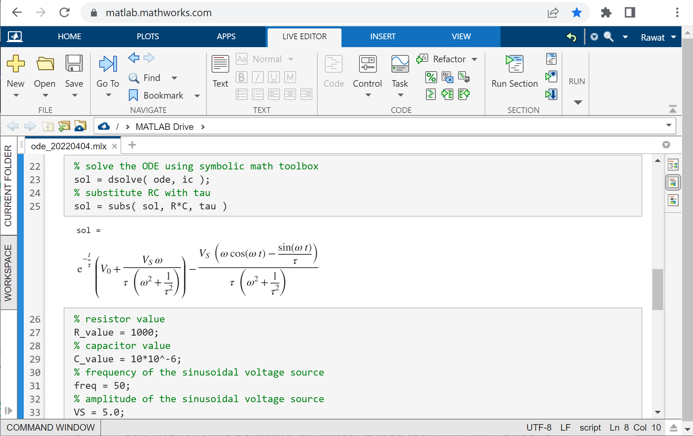
รูป: ตัวอย่างการใช้งาน MATLAB LiveScript แบบออนไลน์ใน MATLAB Cloud
ผลเฉลยของสมการอนุพันธ์สำหรับวงจร RC ในกรณีที่ เป็นสัญญาณไซน์ จะได้ดังนี้
หากรันโค้ดสำหรับ MATLAB จะมีการแสดงรูปกราฟดังนี้ โดยกำหนดให้ , , , ,
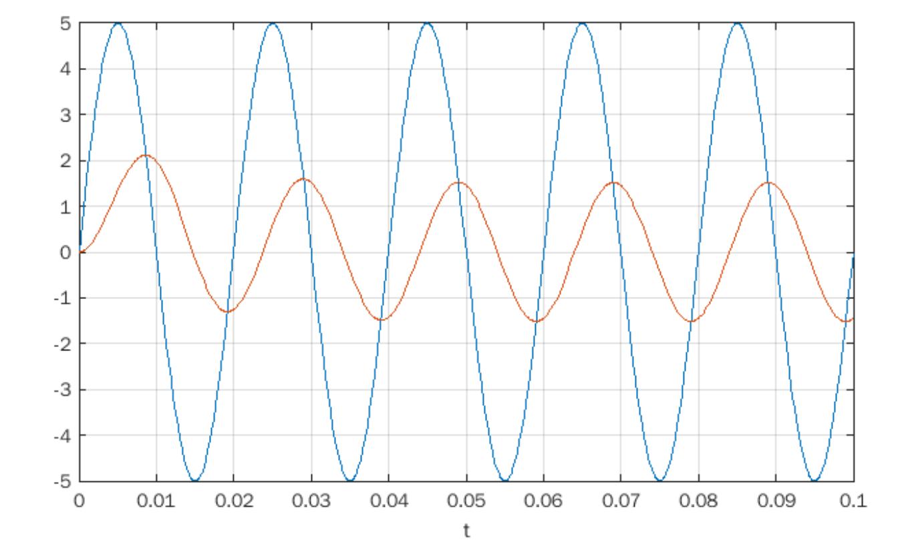
รูป: ตัวอย่างการแสดงรูปกราฟสำหรับ และ
ให้ลองเปรียบเทียบกับรูปคลื่นสัญญาณที่ได้จากการจำลองการทำงานด้วย EasyEDA - LTspice Simulator ในโหมด Transient สำหรับช่วงเวลา
ถ้าให้ มีค่ามากพอ พจน์ที่มี จะลู่เข้า หรือกล่าวได้ว่า จะเข้าสู่สภาวะคงตัว และได้ผลตอบสนองสภาวะคงตัว (Steady-State Response) ดังนี้
กรณีที่ใช้แหล่งจ่ายแรงดันไฟฟ้าแบบขั้นบันได#
ถ้าให้ เป็นฟังก์ชันแบบขั้นบันได
โค้ด MATLAB สำหรับหาผลเฉลยมีดังนี้
% define symbols to be used for formulating the ODE
syms t R C V_S tau V0 v_C(t) v_R(t) v_S(t)
% voltage source: step function (Heaviside)
v_S(t) = V_S * heaviside(t);
% ODE (first-order)
ode = diff(v_C(t),t) + (1/(R*C))*v_C(t) == v_S(t)/(R*C);
% intial condition
ic = v_C(0)==V0;
% solve the ODE to determine v_C(t)
assume( t, 'positive' )
sol = simplify( dsolve( ode, ic ), 'Steps', 10 )
% resistor value for R (Ohm)
R_value = 1000;
% capacitor value for C (Farad)
C_value = 10*10^-6;
% step height V_S (Volt)
VS = 5.0;
% list of parameters
params = [V_S, tau, V0];
% specific values for the parameters
values = [VS, R_value*C_value, 0];
assume(t, 'real');
% substitute the parameters in v_C(t) with the specific values
v_C(t) = subs( sol, params, values )*heaviside(t);
v_R(t) = subs( tau*diff(v_C(t), t), params, values );
% substitute the parameters in v_S(t) with the specific values
v_S(t) = subs( v_S(t), V_S, VS );
% set time interval = -20msec .. 120 msec
tspan = [-0.02, 0.12];
% plot both v_S(t) and v_C(t) functions
fplot( [v_S(t), v_C(t), v_R(t)], tspan, 'linewidth', 1.2 ),
grid on, xlabel('t'), ylim([-1 6]),
legend({'v_S(t)','v_C(t)','v_R(t)'} )
ตัวอย่างการรันโค้ด (บางส่วน)
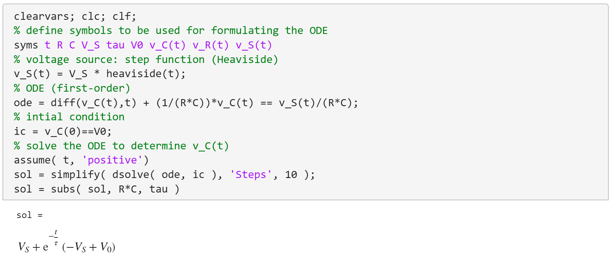
รูป: การคำนวณด้วย MATLAB เพื่อหาผลตอบสนองสำหรับอินพุตที่เป็นฟังก์ชันขั้นบันได
ผลเฉลยของสมการอนุพันธ์ หรือ ผลตอบสนองสมบรูณ์ของระบบสำหรับ เป็นไปตามสมการต่อไปนี้
การแสดงรูปกราฟด้วย MATLAB ได้ใช้ค่าสำหรับพารามิเตอร์ดังนี้ , , ,
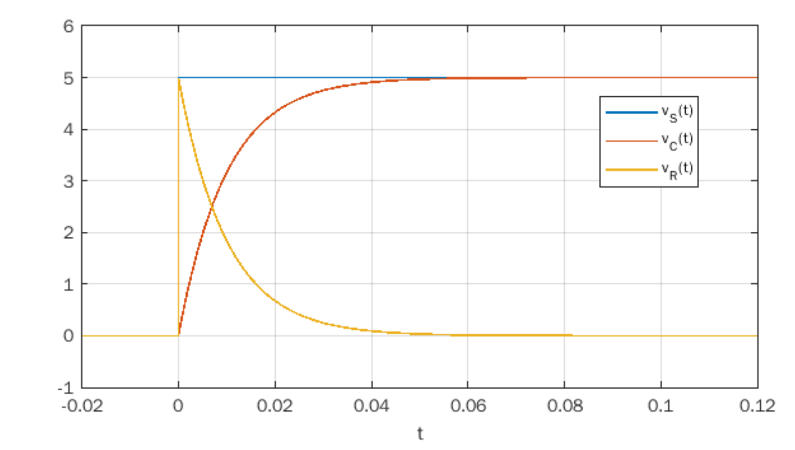
รูป: การแสดงรูปกราฟสำหรับ , และ โดยให้ และ
▷ การวิเคราะห์วงจรอนุกรม RC ด้วย Python#
จากตัวอย่างการเขียนโค้ด MATLAB เพื่อหาผลตอบสนองของระบบ เมื่อมีแหล่งจ่ายเป็นแบบขั้นบันได เช่น เปลี่ยนจาก 0V
เป็น 5V ณ เวลา t=0 ถัดไปลองมาดูตัวอย่างการเขียนโค้ด Python 3 โดยใช้ไลบรารี เช่น sympy
สำหรับการประมวลผลเชิงสัญลักษณ์ การหาผลเฉลยของ ODE และการใช้ numpy สำหรับการประมวลผลเชิงตัวเลข และใช้ matplotlib สำหรับการแสดงรูปกราฟ
from sympy import *
import numpy as np
import matplotlib.pyplot as plt
# use t as time (independent variable)
t = Symbol('t')
# define other symbols
R, C, VS = symbols('R C VS')
i,v_C,v_R,v_S = symbols('i v_C v_R v_S', cls=Function)
# define the time constant (tau)
tau = R*C
# define the ODE for the RC circuit
eqn = Eq(Derivative(v_C(t),t) + v_C(t)/tau - VS/tau,0)
# use SymPy's dsolve() to solve the ODE
sol = dsolve(eqn, func=v_C(t), t=t, ics={v_C(0):0} )
# define the unit-step function as a piecewise function
unit_step = Piecewise( (0,t<0), (1,t>=0) )
# note: The value of the function is 0 for t < 0.
v_C = sol.rhs * unit_step
v_R = tau * diff(v_C, t) * unit_step
v_S = VS * unit_step
# substitute all parameters in v_C(t) with specific values
params = [R, C, VS]
values = [1000, 10*10**-6, 5]
pairs = list( zip(params,values) )
# list funtions to be visuallized by matplotlib
funcs = [ v_S, v_C, v_R ]
funcs = [f.subs(pairs) for f in funcs]
funcs_np = [lambdify(t,f,'numpy') for f in funcs]
# plot the functions for the specified time interval
ts = np.linspace(-0.02, 0.12, 1000, False )
linestyles = ['-','--', '-.']
for i, f in enumerate(funcs_np):
plt.plot( ts, f(ts), linestyle=linestyles[i] )
plt.xlabel('t')
plt.legend( ['v_S(t)', 'v_C(t)', 'v_R(t)'], loc=1 )
plt.grid(True)
plt.show()
หากเปรียบเทียบรูปกราฟที่ได้จากโค้ด Python กับรูปกราฟที่ได้จาก MATLAB ก็จะเห็นว่าได้ผลเหมือนกัน
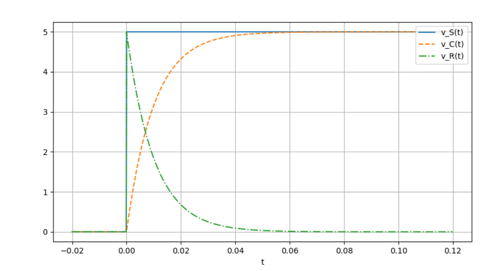
รูป: การแสดงรูปกราฟสำหรับ , และ โดยให้ และ
▷ การวิเคราะห์วงจรอนุกรม RLC#
ถัดไปเป็นวงจรอนุกรมที่ประกอบด้วย อย่างละหนึ่งตัว (หรือ RLC Circuit) ต่ออนุกรมกันร่วมกับแหล่งจ่าย และสามารถเขียนสมการแสดงความสัมพันธ์ของปริมาณทางไฟฟ้าได้ดังนี้
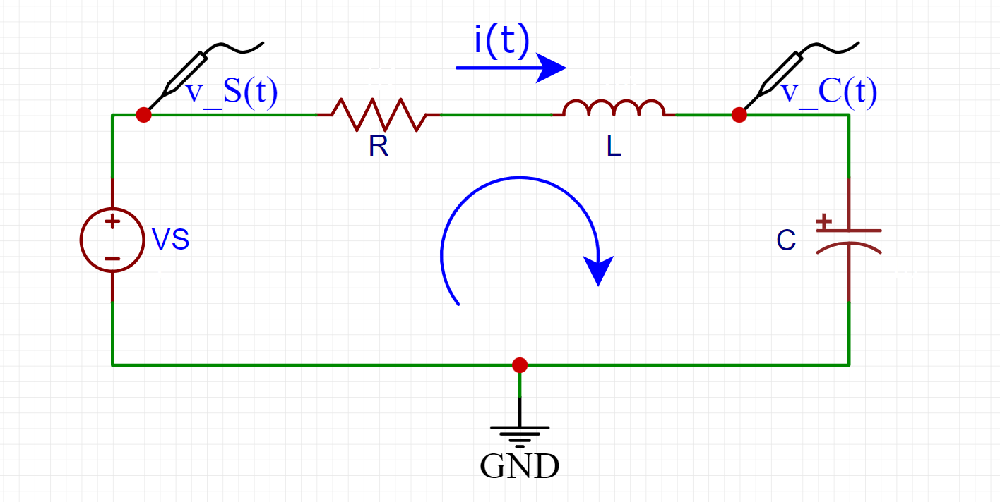
รูป: วงจรอนุกรม RLC และการวัดแรงดันไฟฟ้าของแหล่งจ่าย และแรงดันตกคร่อมที่ตัวเก็บประจุ
โดยที่
หรือเขียนเป็นระบบของสมการอนุพันธ์สามัญสำหรับตัวแปร และ ได้ดังนี้
หรือเขียนให้อยู่ในรูปเมทริกซ์ (Matrix Form)
และมีเงื่อนไขเริ่มต้น (Initial Conditions) ดังนี้ หากพิจารณาการเปลี่ยนแปลงที่เกิดขึ้นตั้งแต่เวลา เป็นต้นไป ซึ่ง หมายถึง แรงดันตกคร่อมที่ตัวเก็บประจุ และ หมายถึง ปริมาณกระแสที่ไหลผ่านตัวเหนี่ยวนำ ณ เวลา
หากต้องการเขียนให้อยู่ในรูปของสมการเชิงอนุพันธ์อันดับสอง ก็ทำได้ดังนี้
ถ้านำสมการนี้ไปหาอนุพันธ์ตามตัวแปร อีกหนึ่งครั้ง จะได้เป็น
ในหลายตำรา จะมีการเขียนรูปสมการ ODE ดังนี้ โดยมีการใช้สัญลักษณ์ค่าคงที่ และ
ลองมาดูตัวอย่างการคำนวณด้วย MATLAB โดยกำหนดให้ เป็นฟังก์ชันแบบขั้นบันไดซึ่งเปลี่ยนจาก เป็น ที่เวลา และให้ , , , , ตามลำดับ เป็นค่าตัวเลขสำหรับตัวอย่างในการคำนวณ
% clear all symbols, variables, figures and command outputs
clearvars; clc; clf;
% define symbols to be used for formulating the ODE
syms t R L C VS V0 I0 v_C(t) i(t)
eq1 = diff(v_C(t),t) == i(t)/C;
eq2 = diff(i(t),t) == (VS - i(t)*R - v_C(t))/L;
% state equations
eqn = [eq1, eq2];
% initial condition
ic = [i(0)==I0, v_C(0)==V0];
% solve the ODE system with initial conditions
sol = dsolve( eqn, ic );
v_C(t) = simplify( sol.v_C );
i(t) = simplify( sol.i );
% set specific values for the parameters of the circuit
params = [R, L, C, VS, V0, I0 ];
values = [10, 1, 1/9, 2, 3, 1/3 ];
v_C(t) = simplify( subs( v_C(t), params, values ) )
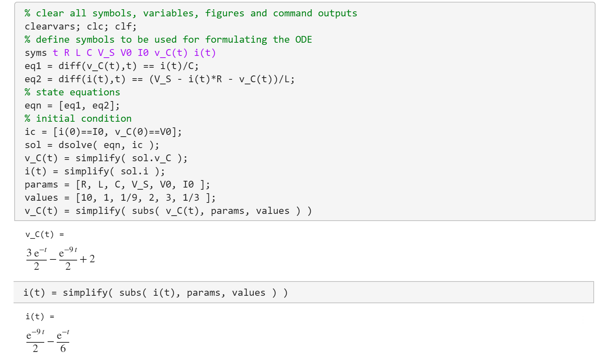
รูป: การคำนวณด้วย MATLAB เพื่อหาผลตอบสนองสำหรับอินพุตที่เป็นฟังก์ชันขั้นบันไดสำหรับวงจร Series RLC
ถัดไปลองมาดูอีกตัวอย่างหนึ่งที่เป็นวงจรอนุกรม R L C แต่มีการต่อทรานซิสเตอร์-มอสเฟตชนิดพี (P-channel MOSFET) เบอร์ IRF7204 ที่ทำหน้าที่เป็นสวิตช์เปิด-ปิดการเชื่อมต่อกับแหล่งจ่ายแรงดันไฟฟ้าคงที่ VS2 เช่น 5V และมีแหล่งจ่ายแรงดัน VS1 ที่ได้เลือกฟังก์ชันการทำงานเป็นแบบ PULSE (ใช้งานเป็นฟังก์ชันแบบขั้นบันไดในช่วงเวลาเริ่มต้น เช่น เปลี่ยนจาก 0V เป็น 5V) ทำหน้าที่ควบคุมการทำงานของมอสเฟต
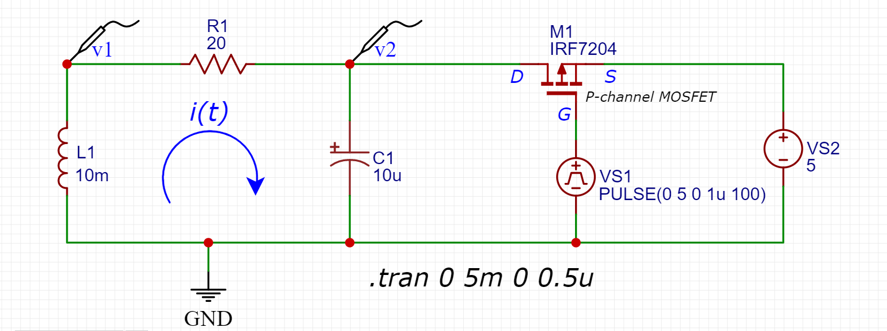
รูป: วงจร Series RLC ที่มีทรานซิสเตอร์แบบมอสเฟตควบคุมการเชื่อมต่อกับแหล่งจ่าย VS2
อีกรูปแบบหนึ่งคือ การใช้สวิตช์ปรกติทั่วไป แต่ตั้งค่าเริ่มต้น (Initial Conditions) ในการจำลองการทำให้ถูกต้อง
เช่น เมื่อ t=0 ให้แรงดันตกคร่อมที่ตัวเก็บประจุ C1 เท่ากับ 5.0V และใช้เป็นเงื่อนไขเริ่มต้นในการทำงาน
(เขียนข้อความว่า ic=5.0 ต่อท้ายค่าของตัวเก็บประจุในข้อความ SPICE text)
และกระแสไฟฟ้าที่ไหลผ่านตัวเหนี่ยวนำ L1 เท่ากับ -0.25A
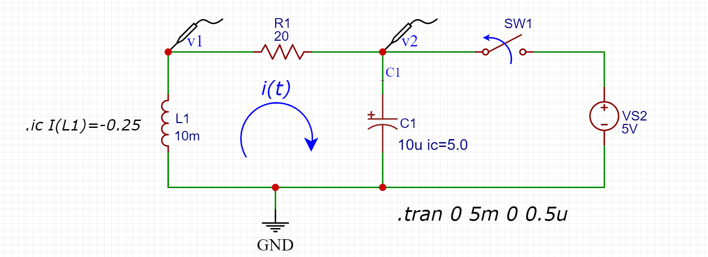
รูป: วงจร Series RLC ที่ใช้สวิตช์แบบเปิด-ปิดการเชื่อมต่อกับแหล่งจ่าย VS2
หากต้องการวัดแรงดันตกคร่อมที่ขาของ R,L,C ก็สามารถใช้ Differential Probes ในการจำลองการทำงานด้วย EasyEDA ตามตัวอย่างดังนี้
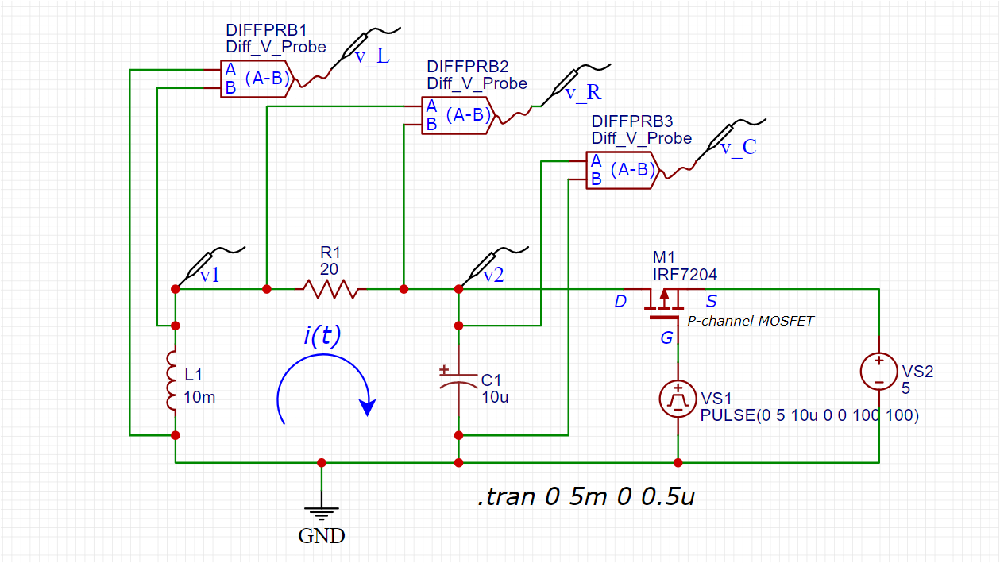
รูป: การใช้ Differntial Probes ในการวัดแรงดันไฟฟ้าตกคร่อมเมื่อจำลองการทำงาน
ข้อสังเกต: หากพิจารณาทิศทางของกระแสและแรงดันตกคร่อมของ R L C ในวงจรสำหรับการวิเคราะห์วงจรตามที่ได้นำเสนอไปแล้วนั้น จะเห็นว่า ซึ่งมีทิศทางตรงข้ามกัน และ
ในช่วงเริ่มต้น แรงดันไฟฟ้าของ VS1 เป็น 0V ความต่างศักย์ไฟฟ้าระหว่างขา G (Gate) และขา S (Source) หรือ ได้เท่ากับ -5V และต่ำกว่า ของมอสเฟตตัวนี้ หรือที่เรียกว่า "แรงดันเทรชโฮลด์" (Threshold Voltage) ซึ่งอยู่ในช่วง -1.0V .. -2.5V (น้อยกว่า 0V)
เมื่อ ส่งผลให้มอสเฟตชนิดนี้ มีค่าความต้านทานต่ำมากและนำไฟฟ้าได้ดีระหว่างขา S (Source) กับ D (Drain) ทำให้มีกระแสไหลจากแหล่งจ่าย VS2 ผ่านมอสเฟตเข้าไปในวงจร ไปยังตัวต้านทานและตัวเหนี่ยวนำไฟฟ้า ในขณะเดียวกันจะมีการชาร์จประจุไฟฟ้าที่ตัวเก็บประจุอย่างรวดเร็ว เมื่อเข้าสู่สภาวะคงตัว กระแสไฟฟ้าที่ไหลผ่านตัวต้านทานและตัวเหนี่ยวนำไฟฟ้า จะได้เท่ากับ 5V / 20 = 0.25A และแรงดันตกคร่อมที่ตัวเก็บประจุเท่ากับ 5V โดยประมาณ
หลังจากนั้น VS1 จะเปลี่ยนเป็น 5V ทำให้ เท่ากับ 0V มอสเฟตจึงมีค่าความต้านทานสูงมากและไม่นำไฟฟ้า อยู่ในสถานะ Cut-off ไม่มีกระแสไหลจาก VS2 เข้าไปในวงจร หรือกล่าวได้ว่า แหล่งจ่าย VS2 ถูกตัดออกจากวงจร
ดังนั้นหากพิจารณา ณ เวลานี้เป็นต้นไป (เมื่อแหล่งจ่าย VS2 ถูกตัดออก) วงจรนี้มีเพียงตัวต้านทาน ตัวเก็บประจุ และตัวเหนี่ยวนำไฟฟ้าต่ออนุกรมกันในวงจรเท่านั้น ไม่มีแหล่งจ่ายแรงดันไฟฟ้าในวงจร (Source-Free RLC Circuit) กระแสไฟฟ้าที่ไหลในขณะนั้นเท่ากับ -0.25A (มีค่าเป็นลบเพราะมีทิศทางสวนทางกับการกำหนดทิศทางการไหลของกระแสในวงจร) และแรงดันตกคร่อมที่ตัวเก็บประจุจะเท่ากับ 5V
ลองมาดูผลการจำลองการทำงานของวงจรด้วย EasyEDA ในโหมด Transient สำหรับช่วงเวลา 0..5ms
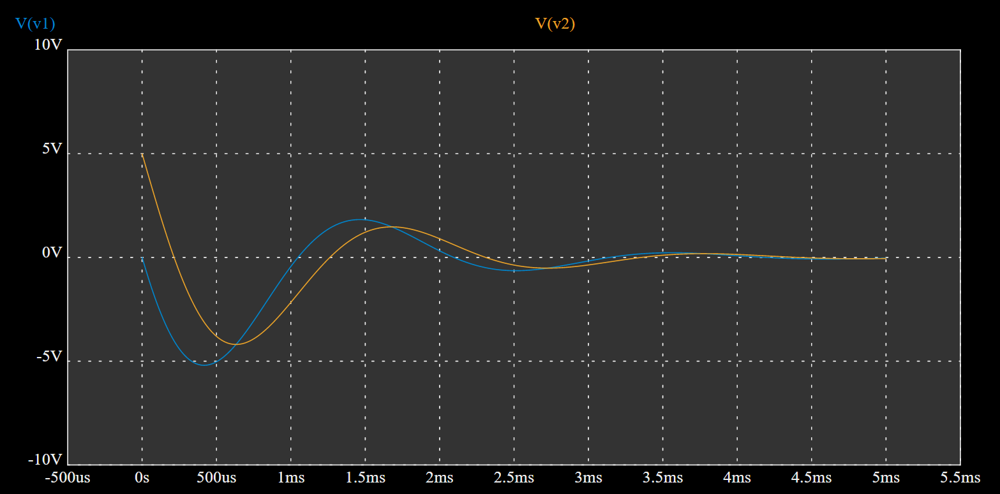
รูป: ผลการจำลองการทำงานโดย EasyEDA แสดงรูปกราฟสำหรับ และ
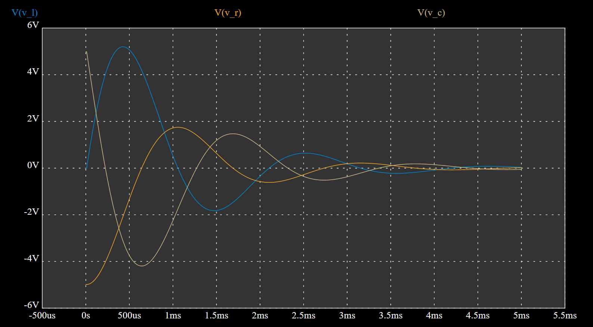
รูป: ผลการจำลองการทำงานโดย EasyEDA แสดงรูปกราฟสำหรับ , และ
ถ้าเปรียบเทียบผลลัพธ์ที่ได้จากโค้ด MATLAB ต่อไป ก็จะได้รูปกราฟในลักษณะเดียวกัน
% clear all symbols, variables, figures and command outputs
clearvars; clc; clf;
% define symbols to be used for formulating the ODE
syms t R L C VS V0 I0 v_C(t) v_R(t) V_L(t) i(t)
eq1 = diff(v_C(t),t) == i(t)/C;
eq2 = diff(i(t),t) == (VS - i(t)*R - v_C(t))/L;
% state equations
eqn = [eq1, eq2];
% initial condition
ic = [i(0)==I0, v_C(0)==V0];
% solve the ODE system with initial conditions
sol = dsolve( eqn, ic );
i(t) = simplify( sol.i );
v_C(t) = simplify( sol.v_C );
v_R(t) = R*i(t);
v_L(t) = L*diff(i(t),t);
% set specific values for the parameters of the circuit
params = [R, L, C, VS, V0, I0 ];
values = [20, 10*10^-3, 10*10^-6, 0, 5, -0.25 ];
v_R(t) = simplify( subs( v_R(t), params, values ) );
v_L(t) = simplify( subs( v_L(t), params, values ) );
v_C(t) = simplify( subs( v_C(t), params, values ) );
% plot v_L(t), v_R(t) and v_C(t) for t between 0 and 5 msec
fplot( [v_L(t), v_R(t), v_C(t)], [0, 5*10^-3] ),
grid on, xlabel('t'), ylim([-6,6]),
xticks( 0:5*10^-4:5*10^-3 ),
legend('v_L(t)','v_R(t)','v_C(t)')
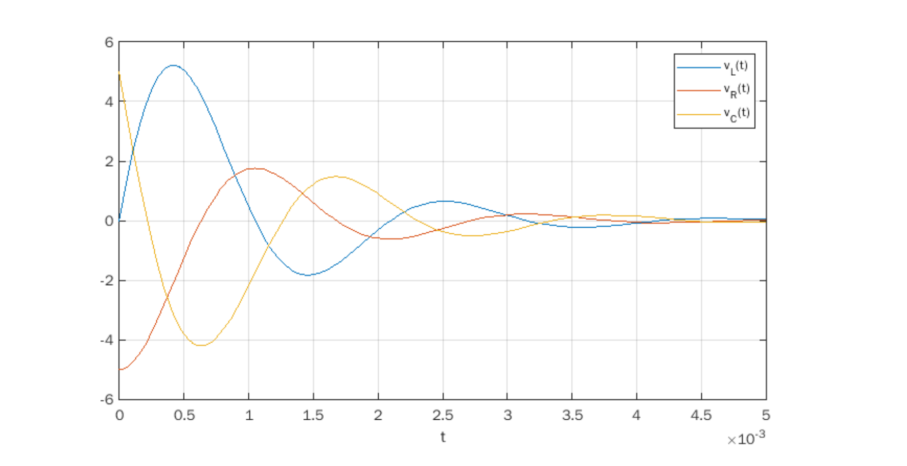
รูป: แสดงรูปกราฟด้วย MATLAB สำหรับ , และ ในช่วงเวลา 0..5ms
▷ กล่าวสรุป#
การเรียนรู้เกี่ยวกับการวิเคราะห์วงจรไฟฟ้าพื้นฐานที่ประกอบด้วย R L C เกี่ยวข้องกับความรู้ในเชิงทฤษฎี เช่น การแปลงวงจรให้เป็นสมการเชิงอนุพันธ์สามัญ และการหาผลเฉลย นอกจากวิธีการวิเคราะห์ในเชิงคณิตศาสตร์แล้ว ยังมีเครื่องมือที่เป็นซอฟต์แวร์ อย่างเช่น ซอฟต์แวร์จำลองการทำงานของวงจรอย่างเช่น EasyEDA - LTspice หรือ การเขียนโค้ดด้วย MATLAB หรือ Python เพื่อแก้ปัญหาทางคณิตศาสตร์ เป็นต้น
หากสนใจตัวอย่างเพิ่มเติมสำหรับการเขียนโค้ด MATLAB หรือ Python เพื่อหาผลเฉลยของสมการเชิงอนุพันธ์สามัญ ด้วยวิธีการคำนวณเชิงสัญลักษณ์และเชิงตัวเลข สามารถอ่านเนื้อหาเพิ่มเติมได้จากบทความภาษาทไทยต่อไปนี้
- "ODE Solving with Python" ตัวอย่างการเขียนโค้ด Python เพื่อหาผลเฉลยของสมการเชิงอนุพันธ์
- "ODE Solving with MATLAB" ตัวอย่างการเขียนโค้ด MATLAB เพื่อหาผลเฉลยของสมการเชิงอนุพันธ์
- "ODE Solving with MATLAB - Laplace Transforms" ตัวอย่างการเขียนโค้ด MATLAB เพื่อหาผลเฉลยของสมการเชิงอนุพันธ์ด้วยวิธีการแปลงลาปลาซ
This work is licensed under a Creative Commons Attribution-ShareAlike 4.0 International License.
Created: 2022-04-03 | Last Updated: 2022-04-23